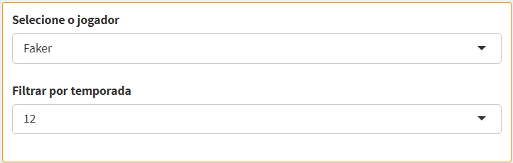
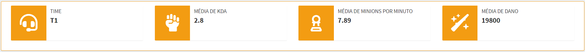
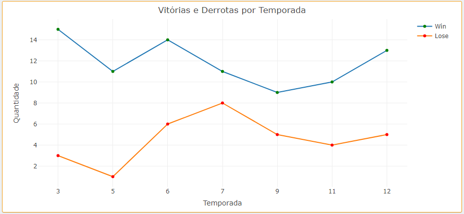
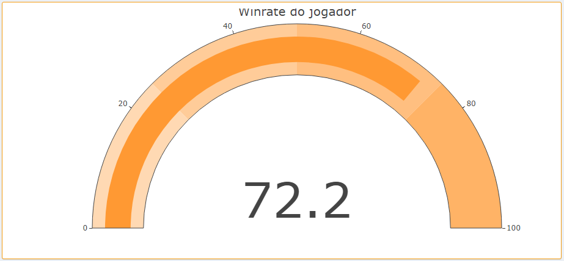
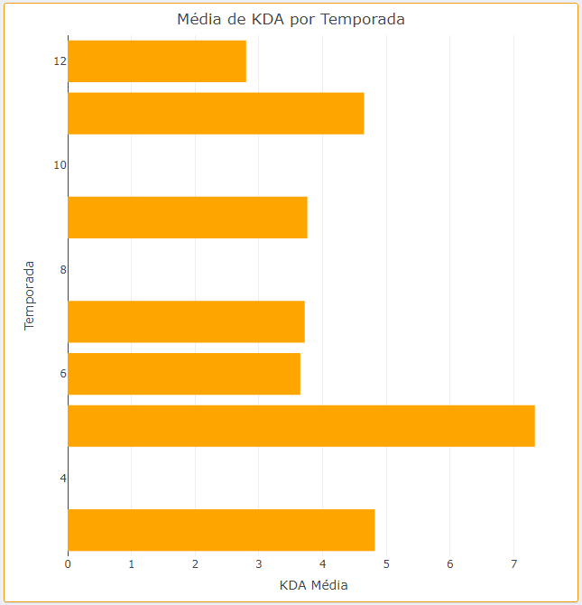

Shiny Dashboard
Contexto
Por meio do pacote Shiny, desenvolvi três visualizações distintas, cada uma dedicada às bases de dados previamente exploradas na página anterior.
O código inteiro deste Dashboard pode ser acessado no Github. Aqui, fornecerei explicações apenas sobre a primeira visualização das 3 que montei. Caso deseje examinar o código completo, sinta-se à vontade para visitar o repositório. Além disso, estou aberto a sugestões e feedback.
O objetivo da minha primeira visualização “Player” é contar uma história do jogador, mostrando seu desempenho durante todas as temporadas. Essa ferramenta pode ser usada por um jogador qualquer para se basear nas métricas de um profissional e saber em quais aspectos ele deve melhorar para alcançar um melhor desempenho em suas partidas. Além disso, também pode ser útil para um time comparar jogadores e saber qual se encaixa melhor no perfil desejado para o time.
Carregando a base “Player” que tratamos:
1# Antes de iniciar a interface ou o servidor:
load("Player.RData")
2# Dentro do servidor:
PlayersData <- reactive({
df <- Player
df <- df[df$event == "Main", ]
return(df)
})- 1
- Carrega dados previamente salvos em arquivo do tipo “.RData”.
- 2
- Chama essa base de forma reativa, ou seja, algo que é recalculado automaticamente quando as dependências mudam (é muito útil nesse caso onde a base muda toda vez que um filtro é realizado). Aproveitei para filtrar o evento como “Main” que seriam os jogos principais do campeonato.
Filtros & Reações aos filtros

Esses são os dois filtros que iremos utilizar nesse dashboard.
Um para os jogadores, contendo os nomes de todos os jogadores que participaram de pelo menos um mundial.
Outro para as temporadas, contendo as temporadas na qual aquele jogador participou.
# UI
1box(width = 12, status = "warning",solidHeader = T,
selectInput("Player", "Selecione o jogador", choices = NULL),
selectInput("Season", "Filtrar por temporada", choices = NULL)
# Server
2observe({
updateSelectInput(session, "Player", choices = unique(PlayersData()$player),selected = "Faker")
})
3observeEvent(input$Player, {
base <- PlayersData() %>% filter(player == input$Player)
updateSelectInput(session, "Season", choices = unique(base$season))
})
4Players_Inputs <- reactive({
base <- PlayersData() %>% filter(player == input$Player, season == input$Season)
return(base)
})- 1
-
Criamos uma caixa com os parâmetros
width,statusesolidHeader, os quais são utilizados para personalizar a aparência dessa caixa específica. O parâmetrowidthfoi definido como 12 (máximo), garantindo que a caixa ocupe toda a largura da coluna em que está inserida. O parâmetrostatusfoi configurado como “warning”, dando à caixa uma coloração laranja no fundo. Já osolidHeaderfoi ajustado para verdadeiro (T), proporcionando um contorno laranja ao redor de toda a caixa. Em seguida, por meio da funçãoselectInput, implementamos dois filtros (inputs) que estarão contidos dentro dessa caixa personalizada. - 2
- É uma expressão reativa que observa mudanças no ambiente e, sempre que ocorrem, atualiza o input da seleção “Player” na interface gráfica.
- 3
- Observa eventos relacionados à seleção no input “Player”. Sempre que o usuário seleciona um jogador a base é filtrada pelo nome do jogador, em seguida atualiza o input da seleção “Season” fazendo com que mostre somente as temporadas onde aquele jogador atuou.
- 4
- Por fim criamos outra base reativa, que irá interagir diretamente com os filtros feitos pelo usuário.
Painel de informações do jogador

Este painel fornece uma visão das estatísticas de desempenho do jogador selecionado durante a temporada especificada pelos filtros, onde:
Time: Refere-se à equipe à qual o jogador estava afiliado durante a temporada em questão.
Média de KDA (Kill, Deaths, Assists): Essa métrica é uma representação da participação do jogador em cada partida. Calculada pela fórmula ((K+A)/D), onde K representa eliminações, D representa mortes e A representa assistências.
Média de Minions por Minuto: Ela indica quantas tropas o jogador consegue abater, em média, a cada minuto de jogo, refletindo sua habilidade em acumular recursos e ganhar vantagem econômica.
Média de Dano: Esta estatística revela a média de dano causado pelo jogador ao longo de todas as partidas do campeonato na temporada em questão.
# UI
1box(width = 12, status = "warning",solidHeader = T,
infoBoxOutput("Team", width = 3),
infoBoxOutput("KDA", width = 3),
infoBoxOutput("CreepScore", width = 3),
infoBoxOutput("Damage", width = 3)
)
# Server
2output$Team <- renderInfoBox({
infoBox(
title = "Time",
value = Players_Inputs()$team,
icon = icon("headset"),
color = "yellow"
)
})
output$KDA <- renderInfoBox({
infoBox(
title = "Média de KDA",
value = mean(Players_Inputs()$kill_death_assist_ratio),
icon = icon("hand-fist"),
color = "yellow"
)
})
output$CreepScore <- renderInfoBox({
infoBox(
title = "Média de Minions por minuto",
value = mean(Players_Inputs()$cs.min),
icon = icon("chess-pawn"),
color = "yellow"
)
})
output$Damage <- renderInfoBox({
infoBox(
title = "Média de Dano",
value = mean(Players_Inputs()$damage),
icon = icon("wand-sparkles"),
color = "yellow"
)
})- 1
-
Configuramos a caixa com os mesmos parâmetros mencionados anteriormente. No entanto, agora estamos focando em gerar caixas de informação dentro dessa estrutura. Utilizando a função
infoboxOutput, a declaramos com um tamanho de 3, já que teremos um total de 4 caixas, permitindo que ocupem todo o espaço disponível (12). - 2
-
Com o
output$Nomeseleciono o output que quero trabalhar. A funçãorenderInfoBoxdiz que quero renderizar uma caixa de informações. Em seguida, chamo a funçãoinfoBoxpara passar os parametros que conterá em cada caixa de informação que são respectivamente o título, o valor, o ícone e a cor.
Gráfico Vitórias e derrtas por temporada

Esse gráfico tem como objetivo informar a quantidade de vitórias e derrotas do jogador em temporadas jogadas pelo mesmo.
# UI
1box(width = 12, status = "warning", solidHeader = T,
plotlyOutput("WL_Season")
)
# Server
2output$WL_Season <- renderPlotly({
df <- PlayersData()
df_filtered <- df %>% filter(player == input$Player)
3 plot_ly(df_filtered, x = ~factor(season), y = ~wins, type = 'scatter', mode = 'lines+markers', name = 'Win', marker = list(color = 'green')) %>%
add_trace(y = ~loses, name = 'Lose', marker = list(color = 'red')) %>%
layout(title = "Vitórias e Derrotas por Temporada", xaxis = list(title = "Temporada"), yaxis = list(title = "Quantidade"))
})- 1
-
Mesmo padrão de caixa, porém agora dentro dela quero criar um gráfico. Usei a função
plotlyOutput("WL_Season")por se tratar de um gráfico com o plotly, se fosse um gráfico qualquer usaria a funçãoplotOutput(). Passei como parametro o nome “WL_Season”, para ficar um nome com sentido ao que estou querendo mostrar, mas poderia ser qualquer nome. - 2
-
Nessa parte eu renderizo o gráfico, mas antes de começar a trabalhar nele, como eu queria que o gráfico mostrasse toda a informação do jogador sem segregar por temporada tive que chamar a base reativa
PlayersData(), criada anteriormente, e realizar o filtro separadamente, salvando em uma variavel “df_filtered”. - 3
- Agora sim, crio o gráfico normalmente, como no R.
Gráfico Taxa de vitórias do jogador

# UI
box(width = 12, status = "warning",solidHeader = T,
plotlyOutput("Wr_gauge")
)
# Server
output$Wr_gauge <- renderPlotly({
df <- PlayersData()
df_filtered <- df %>% filter(player == input$Player)
valor <- sum(df_filtered$wins)/sum(df_filtered$games_played)*100
plot_ly(
type = "indicator",
title = "Winrate do jogador",
mode = "gauge+number",
value = valor,
gauge = list(
axis = list(range = list(0, 100)),
bar = list(color = "#ff9933"),
steps = list(
list(range = c(0, 25), color = "#ffd9b3"),
list(range = c(25, 50), color = "#ffcc99"),
list(range = c(50, 75), color = "#ffbf80"),
list(range = c(75, 100), color = "#ffb366")
)
)
)
})Gráfico Média de KDA pro temporada

# UI
box(width = 12, status = "warning", solidHeader = T,
plotlyOutput("KDA_Season", height = 642)
)
# Server
output$KDA_Season <- renderPlotly({
df <- PlayersData()
df_filtered <- df %>% filter(player == input$Player)
plot_ly(df_filtered, x = ~kill_death_assist_ratio, y = ~season, type = 'bar',orientation = 'h', marker = list(color = 'orange')) %>%
layout(title = "Média de KDA por Temporada", xaxis = list(title = "KDA Média"), yaxis = list(title = "Temporada"),
sliders = list(list(currentvalue = list(prefix = "Temporada:"), steps = list())))
})